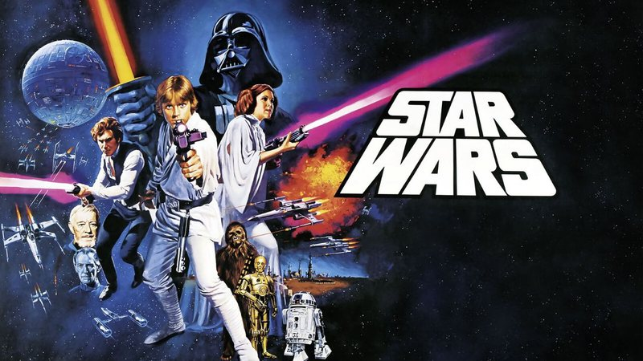

Se atualize nos caminhos da força
Filmes Clássicos
Sinopse
O primeiro filme foi lançado apenas com o título Star Wars, em 25 de maio de 1977, e tornou-se um fenômeno mundial inesperado de cultura popular, sendo responsável pelo início da "era dos blockbusters ", que são superproduções cinematográficas que fazem sucesso nas bilheterias e viram franquias com brinquedos, jogos, livros, etc. Foi seguido por duas sequências, The Empire Strikes Back e Return of the Jedi, lançadas com intervalos de três anos, formando a trilogia original, que segue o trio icônico formado por Luke Skywalker, Han Solo e Princesa Leia, que luta pela Aliança Rebelde para derrubar o tirano Império Galáctico; paralelamente ocorre a jornada de Luke para se tornar um cavaleiro Jedi e a luta contra Darth Vader.
Filmes atuais
Sinopse
Se passaram 30 anos após a queda do Império, Luke Skywalker está desaparecido, e na sua ausência surgiu a Primeira Ordem, liderada pelo Líder Supremo Snoke, que quer reaver o Império e luta contra a Resistência, comandada por Leia e apoiada pela Nova República. Poe Dameron, um piloto da Resistência, vai a Jakku encontrar-se com Lor San Tekka, um antigo aliado que tem um mapa com o paradeiro de Luke. Mas a Primeira Ordem chega e captura Poe; mas tarde ele escapa com ajuda de Finn, um stormtrooper desertor; o droide BB-8 foge com o possível mapa do paradeiro de Luke e para nas mãos de Rey, uma sucateira, piloto e com grande conhecimentos de mecânica, que vive sozinha esperando o retorno de sua família. Na fuga, Finn e Poe são atingidos, Poe some e Finn acaba encontrando Rey e ambos fogem da Primeira Ordem na Millennium Falcon.